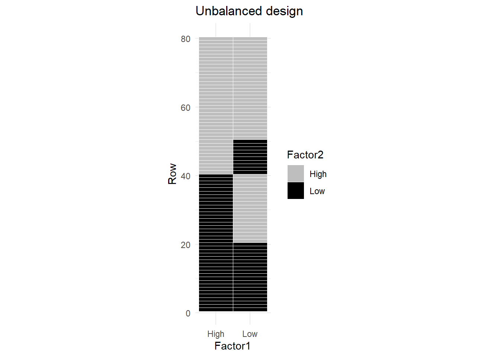

Analysis of Unbalanced Data
Introduction
A balanced dataset is one in which there are an equal number of replicates for each and every factor level combination. Unbalanced datasets are those that have an unequal number of replicates in at least one factor level combination. In reality, it is more common to have unbalanced data than balanced data. This is particularly true for observational studies. Therefore, it is critical to learn how to analyze unbalanced data.
The formulas for unbalanced data are more complicated than when the data is balanced. This is not an issue since we will let computers do the calculations. The bigger issue deals with the fact that unbalanced datasets often result in correlated factor effects. Due to the equal number of replicates, factors in a balanced dataset are orthogonal. Factors in an unbalanced dataset are not guaranteed this desirable property.1
Figure 1 is a graphical depiction of an unbalanced dataset for two factors A and B, each with 2 levels, coded as -1 and 1. You can see that each factor level combination appears an equal number of times2.
The correlation of these two columns of 1’s and -1’s is zero.
We are measuring the correlation of the coded factors with each other. We have not even bothered to define the response variable in these examples, since it is irrelevant to the discussion.
Now consider Figure 2, where there are fewer observations for the A=1, B=-1 combination, and more observations for A=1, B=1.

The correlation between the two factors is NOT zero.
The issue with correlated factors is that their effects on the response are also confounded. When the response varies it cannot be determined how much of the variation in the response is due to factor A and how much was due to factor B.
Type I
This correlation/confounding of effects also means it is not clear exactly which factor the sums of squares should be attributed to in an ANOVA. Figure 3 (a)3 illustrates this shared sum of squares. The shared sum of squares is due to the correlation between the two factors and is represented by the overlap in the circles.

The order in which terms are specified in the model determine which factor the shared sum of squares is attributed to. This approach is referred to as Sequential Sum of Squares, or Type I. This is the default approach in R.
Figure 3 (b) and (c) illustrate how the sum of squares are allocated according to order the factors are listed when the model is specified.
This can be illustrated with a more concrete example, using data to show how sequential sums of squares works. The data are taken from a hypothetical example by Shaw & Mitchell-Olds(1993)4 as cited by Hector, Von Felton, & Schmid (2010)5. In this study, the response is height of a plant. One factor is thinning: yes or no. Thinning is a process where neighboring plants are removed so that they do not compete with each other for light and nutrients in the soil. The other factor in the study is the initial size of the plant at the beginning of the study period. It also has two levels: small and large.
Initial size and thinning were crossed to create an unbalanced BF[2] design. The data are presented in Table 1
Code
example = tibble( initial_size = c(rep("small",5), rep("large", 6)),
thinning = c("not thinned", "not thinned", rep("thinned", 3), rep("not thinned", 4), "thinned", "thinned"),
height = c(50, 57, 57, 71, 85, 91, 94, 102, 110, 105, 120))
pander(example)| initial_size | thinning | height |
|---|---|---|
| small | not thinned | 50 |
| small | not thinned | 57 |
| small | thinned | 57 |
| small | thinned | 71 |
| small | thinned | 85 |
| large | not thinned | 91 |
| large | not thinned | 94 |
| large | not thinned | 102 |
| large | not thinned | 110 |
| large | thinned | 105 |
| large | thinned | 120 |
Table 2, below, contains output for the ANOVA when initial_size is listed first in the code where the model is defined. initial_size is highly significant (p-value = .0004) due to the high value for Sum of Squares. thinning is also marginally significant (p-value = 0.0510).
Code
A_first <- aov(height~initial_size + thinning + initial_size:thinning, data = example)
pander(anova(A_first), round = c(0,0,0,2,3))| Df | Sum Sq | Mean Sq | F value | Pr(>F) | |
|---|---|---|---|---|---|
| initial_size | 1 | 4291 | 4291 | 40.17 | 0 |
| thinning | 1 | 590 | 590 | 5.52 | 0.051 |
| initial_size:thinning | 1 | 11 | 11 | 0.11 | 0.753 |
| Residuals | 7 | 748 | 107 | NA | NA |
In Table 2, the \(SS_\text{initial size}\) represents the sum of squares for initial size as if it was the only term in the model. \(SS_\text{thinning}\) is calculated after accounting for all the sum of squares due to initial size. Similarly, the sum of squares for the interaction represents the left over sum of squares that can be attributed to the interaction factor after accounting for initial size and thinning. Thus, each factor represents the remaining sum of squares attributable to that factor after accounting for everything that appeared before it in the model, and ignoring everything that came after it in the model specification.
Observe the changes in Table 3 when we reverse the order of initial_size and thinning in the model specification. thinning is far from significant and has a much lower sum of squares. Thus, the order in which factors are entered into the model is critical.
Don’t worry that \(SS_{thinning}\) was actually lower when thinning was listed first. This sometimes occurs.
Code
thinning_first <- aov(height~thinning + initial_size + thinning:initial_size, data = example)
pander(anova(thinning_first), round = c(0,0,0,2,3))| Df | Sum Sq | Mean Sq | F value | Pr(>F) | |
|---|---|---|---|---|---|
| thinning | 1 | 35 | 35 | 0.33 | 0.583 |
| initial_size | 1 | 4846 | 4846 | 45.37 | 0 |
| thinning:initial_size | 1 | 11 | 11 | 0.11 | 0.753 |
| Residuals | 7 | 748 | 107 | NA | NA |
When specifying the interaction term in R thinning:initial_size is equivalent to initial_size:thinning.
There are a few interesting thing to note when comparing the output in Table 2 with Table 3.
- Even though the sum of squares for the two main effects changed, their total is the same.
\[ 4291 + 590 = 35 + 4846 = 4881 \]
This illustrates a key point about Type I SS: the sum of SS of all the factors will equal \(SS_{total}\).
- The interaction term was the last specified factor in both cases, and so its sum of squares is the same in both tables.
- The \(SS_{residuals}\) does not change based on the order.
Deciding which factor to list first is not always easy and depends on your desired hypotheses. In this case, we may wish to test the effectiveness of thinning after accounting for the effect of the initial size of the plant. If such was the case, it would make sense to list thinning second.
In most basic factorial designs it is not appropriate or possible to decide which variable should be listed first. You can use an adjusted sum of squares approach instead, which include Type II and Type III. We will discuss Type III first since it is more straightforward to explain.
Type III
When sequential sum of squares is not appropriate, one common method of adjustment is called Type III, or “as if last”, sum of squares. This approach computes the sums of squares for each factor as if it was the last factor listed in the sequential sum of squares. To illustrate this, 3 ANOVA tables are shown below. In each table, a different factor is listed last. When the interaction is listed last, it’s sums of squares is 11; when initial_size is listed last its sum of squares is 4,808; and when thinning is listed last its sum of squares is 597 (all values have been rounded to the nearest whole number).
Table 4: 3 Type I ANOVA Tables Used to Get a Type III
| Df | Sum Sq | Mean Sq | F value | Pr(>F) | |
|---|---|---|---|---|---|
| thinning | 1 | 35 | 35 | 0.3 | 0.58 |
| initial_size | 1 | 4846 | 4846 | 45.4 | 0 |
| interaction | 1 | 11 | 11 | 0.1 | 0.75 |
| Residuals | 7 | 748 | 107 | NA | NA |
| Df | Sum Sq | Mean Sq | F value | Pr(>F) | |
|---|---|---|---|---|---|
| thinning | 1 | 35 | 35 | 0.3 | 0.58 |
| interaction | 1 | 50 | 50 | 0.5 | 0.52 |
| initial_size | 1 | 4808 | 4808 | 45 | 0 |
| Residuals | 7 | 748 | 107 | NA | NA |
| Df | Sum Sq | Mean Sq | F value | Pr(>F) | |
|---|---|---|---|---|---|
| interaction | 1 | 44 | 44 | 0.4 | 0.54 |
| initial_size | 1 | 4252 | 4252 | 39.8 | 0 |
| thinning | 1 | 597 | 597 | 5.6 | 0.05 |
| Residuals | 7 | 748 | 107 | NA | NA |
The type III ANOVA output, in Table 5, contains the sum of squares for each factor when it was listed last.
The order of the variables when coding the model does not matter in a Type 3 ANOVA.
| Sum Sq | Df | F value | Pr(>F) | |
|---|---|---|---|---|
| (Intercept) | 39402 | 1 | 368.9 | 0 |
| thinning | 597 | 1 | 5.6 | 0.05 |
| initial_size | 4808 | 1 | 45 | 0 |
| interaction | 11 | 1 | 0.1 | 0.75 |
| Residuals | 748 | 7 | NA | NA |
The sum of squares contained in a Type III ANOVA table can be interpreted as the sum of squares attributable to a factor after all the other factors in the model have been accounted for. Type III does not attribute the overlapping sum of squares to any factor. This is represented by the middle intersection piece of the Venn diagram in panel (d) of Figure 3.6 This is why the sum of squares for factors in Type III do NOT add up to the total sum of squares, like they did in Type I. The Type III ANOVA tests are based on marginal means unweighted by sample size.
Type II
One of the major complaints against a Type III approach is that it violates the principle of marginality. The marginality principle states that when a higher order effect (e.g. an interaction) is included in a model, the lower order effects (e.g. main effects) should also be includeded in the model. According to this principle it does not make sense to test a main effect after accounting for the interaction, which is exactly the situation we came across in Type III.
Type II strives to maintain the principle of marginality, while at the same time taking an “as if last” approach. Stated another way, in a Type II ANOVA, each factor is tested “as if last” but ignoring all higher order terms.
To illustrate this, 3 different Type I ANOVA tables are shown below. In each table, a different factor is listed last. In the panels (a) and (b) of Table 6 the interaction is excluded since we need an “as if last, while exluding higher order terms” from the model. In panel (c) of table the interaction is included, but is last.
Table 6: 3 Type I ANOVA Tables Used to Get a Type II
| Df | Sum Sq | Mean Sq | F value | Pr(>F) | |
|---|---|---|---|---|---|
| initial_size | 1 | 4291 | 4291 | 45.2 | 0 |
| thinning | 1 | 590 | 590 | 6.2 | 0.04 |
| Residuals | 8 | 759 | 95 | NA | NA |
| Df | Sum Sq | Mean Sq | F value | Pr(>F) | |
|---|---|---|---|---|---|
| thinning | 1 | 35 | 35 | 0.4 | 0.56 |
| initial_size | 1 | 4846 | 4846 | 51.1 | 0 |
| Residuals | 8 | 759 | 95 | NA | NA |
| Df | Sum Sq | Mean Sq | F value | Pr(>F) | |
|---|---|---|---|---|---|
| thinning | 1 | 35 | 35 | 0.3 | 0.58 |
| initial_size | 1 | 4846 | 4846 | 45.4 | 0 |
| thinning:initial_size | 1 | 11 | 11 | 0.1 | 0.75 |
| Residuals | 7 | 748 | 107 | NA | NA |
The type II ANOVA output, in Table 7, contains the sum of squares for each factor in Table 6 when the factor was listed last and higher order factors were not included.
| Sum Sq | Df | F value | Pr(>F) | |
|---|---|---|---|---|
| thinning | 597 | 1 | 5.6 | 0.05 |
| initial_size | 4808 | 1 | 45 | 0 |
| interaction | 11 | 1 | 0.1 | 0.75 |
| Residuals | 748 | 7 | NA | NA |
The sum of squares contained in a Type II ANOVA table can be interpreted as the sum of squares attributable to a factor after all the lower or same order factors in the model have been accounted for. The Type II ANOVA tests are based on marginal means weighted by sample size.
Type IV
There are actually many other methods for calculating sum of squares. One in particular is designed for unbalanced data. Here, the term unbalanced does not simply mean unequal sample sizes across factor level combinations. Unbalanced can also mean that certain factor level combinations are completely missing from the design. This can occur when a combination of factor levels is not possible (i.e. male and pregnant), or if, for whatever reason, observations were not obtained for some factor level combination(s).
When the dataset is unbalanced in this way, the analyst should consider using Type IV ANOVA.
Pros/Cons Table
Below is a summary table of the pros and cons of the first 3 methods.
| ANOVA Type | Pros | Cons |
|---|---|---|
| Type I |
|
|
| Type II |
|
|
| Type III |
|
|
After decades of debate and disagreement, there is an emerging concept gaining ground amongst statisticians that there doesn’t have to be a “right” and a “wrong” approach. Rather, the analyst should pick the approach that best matches the hypothesis they wish to test.
This discussion has assumed the model is using fixed effects for all factors. In random effects models or mixed models the discussion changes. Those models are outside the scope of this book.
Examples
This section strives to provide an example of when each type of ANOVA may be appropriate.
Type I
For an example of when Type I may be useful we do not need to look any further than the plant study we have been using all along on this page. Say our research question aims to test the effectiveness of thinning after accounting for the plant’s initial size our hypothesis matches a Type I approach. The research question specifies the order in which we want to consider the factors. Since Type I ANOVA is dependent on the order in which factors are specified in the model, we are able to incorporate the desired order from our research question into the analysis.
Type II
You may want to use a Type II ANOVA if the disparity in sample sizes reflects a similar disparity in population size. Perhaps your end goal is to apply the treatment to all members of the population and you want any difference observed in the study to be present in the population. In that case, Type II may be the best choice. This will be more common in observational studies.
For example, a web developer randomly assigns website visitors to one of two website designs. Design A is evenly split between males and females, but Design B receives many more males than females. In this case, the lopsided nature of the gender distribution may accurately reflect the population of website visitors being predominantly male.
The test of the main effects for gender and website design will be influenced by sample sizes. Say we conclude that people tend to buy more products when presented with website A. This conclusion will be influenced more heavily by males since males represented a larger proportion of the sample. But in this case that’s okay because males also represent a larger part of our target audience (website visitors).
Type III
Let’s continue with the website design and gender study mentioned above. Now, instead of taking the role of a business owner, we assume the role of a cognitive psychologist. We are not interested in trying to maximize profits for a target market. Rather, we are interested in knowing how individuals respond to the two different site designs. The fact that we partnered with a website with predominantly male clientele is incidental. We want to arrive at conclusions that will be useful in explaining/predicting behavior of an individual.
If we use Type II ANOVA the result of the significance test will be confounded with the fact that males account for a larger portion of the sample. A Type III ANOVA will not weight by sample size and will treat the estimated means of males and females equally. Thus our results can be used to predict an individual’s behavior based on their gender and website design. Our findings can now be used by other websites with a different clientele (e.g. predominantly female) to correctly predict/explain individual’s actions.
Key Points
A few other key points are worth remembering.
First, small amount of unbalance will result in a small amount of difference in the different methods for calculating sum of squares. When the data is balanced, the 3 types of ANOVA will give the same results.
Second, no amount of adjustment to the sum of squares calculation can account for or correct bias in a study. For this reason, it is important to understand what is causing the unbalance in the dataset. Was it a deliberate decision in the design due to time/cost constraints? Was it due to spoiled experimental runs/units? In the case of human research, was attrition the cause? If the cause of the unbalance is related to the factor level values there could be bias in the study.
For example, consider an experiment that wanted to study people’s sentiment about public speaking. One group of 10 participants was assigned to talk about their most embarrassing moment. The other group of 10 participants was assigned a neutral topic, like what they had for dinner the previous day. Four of the 10 people assigned to speak on an embarrassing moment dropped out of the study. The design started out as balanced, but the resulting dataset is unbalanced.
The reason for multiple people dropping out is likely connected to the fact that those people may not feel comfortable sharing embarrassing experiences in a public setting. The remaining people in the study may be fundamentally different in how they feel about sharing embarrassing experiences. The data is not missing completely at random. Bias has been introduced!
Third, always test your highest-order interaction first. The results for the highest order interaction will be the same regardless of what type of ANOVA you use (sequential or adjusted). If the interaction is significant, most of the time it is not appropriate to interpret the hypothesis test of the main effects anyway so you won’t need to worry about which type is used.
Finally, when analyzing unbalanced data in this class you should use Type III ANOVA unless directed otherwise. This ends up being a bit of a conservative approach. If a main effect is significant, even after accounting for a non-significant interaction, there is a good chance the main effect will be even more significant if the interaction were to be excluded. The Type III is also simpler in terms of explanation/interpretation. It will help share answers and work if we are all using the same approach as a class.
Tip
Use Type III ANOVA for unbalanced datasets in this class.
R Instruction
Type I ANOVA is the default in the anova() command. In fact, it is the only type of ANOVA available in anova().
To get Type II or Type III ANOVA you will create a model in the usual way and then use the Anova() command from the car package. Note the use of the capital ‘A’, instead of lower case ‘a’, in the function name.
car::Anova(myaov, type = 3)caris the name of the package theAnova()command comes from::allows you to use functions from a package without having to load the entire package with alibrary()command. The package you want to access is specifed on the left of the::and the function name is specified on the right.Anova()is a function from thecarpackage. It can be used to get type II or type III ANOVA tables for a variety of different models, includingaov(),lm(),glm(), etc.myaovis the name we gave our model in a previous step (not shown).type=argument specifies whether Type II or Type III is desired. It accepts Arabic numerals, or roman numerals in quotes: 2, 3, “II”, “III”.
For examples of code that produce Type III and Type II ANOVA tables look at Table 5 and Table 7 respectively. Those examples have an additional pander() command, and its round= argument. This additional code is solely for formatting and is not necessary.
summary()
Many students are in the habit of using summary() to evaluate model hypothesis tests. When called on an aov object (i.e. an object created using the aov() command), summary()’ prints a Type I ANOVA table.
However, when called on an lm() object, summary() does not print an ANOVA table at all. The default output is to print variable coefficients, standard deviations, and t-test results (t statistic and p-value). If the object has an independent, categorical factor variable a t-test will be conducted for the factor levels. (Actually, all but 1 factor level will be tested. The missing factor level is considered the reference level and is included in the intercept). If there are only two factor levels, the p-value from the t-test of that factor will be equal to the p-values from a Type III ANOVA applied to the same model.
lm() is usually preferred over aov() if there are 1 or more numeric independent variables in the model.
To get a ANOVA table and the F-tests for a factor’s overall significance you can call car::Anova() or anova() on an lm() object.
Footnotes
For a brief, accessible description of how orthogonality relates to balanced designs, read here: https://www.statisticshowto.com/orthogonality/. The last sentence states “Orthogonality is present in a model if any factor’s effects sum to zero across the effects of any other factors in the table.” We know a factor’s effects sum to zero, and when factors are crossed, the above quoted statement is also true IF there are an equal number of replicates at each factor level. When the number of replicates is not equal, the sum across factor levels is not guaranteed to be exactly zero; so, orthogonality is no longer guaranteed.↩︎
https://stats.stackexchange.com/questions/552702/multifactor-anova-what-is-the-connection-between-sample-size-and-orthogonality↩︎
Journal of Animal Ecology, Volume: 79, Issue: 2, Pages: 308-316, First published: 05 February 2010, DOI: (10.1111/j.1365-2656.2009.01634.x)↩︎
Shaw, R.G. & Mitchell-Olds, T. (1993) ANOVA for unbalanced data: an overview. Ecology, 74, 1638–1645.↩︎
Journal of Animal Ecology, Volume: 79, Issue: 2, Pages: 308-316, First published: 05 February 2010, DOI: (10.1111/j.1365-2656.2009.01634.x)↩︎
There is also the possibility the total sum of squares is more than the sum of squares total due to “double counting” the variation. This is much more difficult to illustrate with Venn diagrams.↩︎